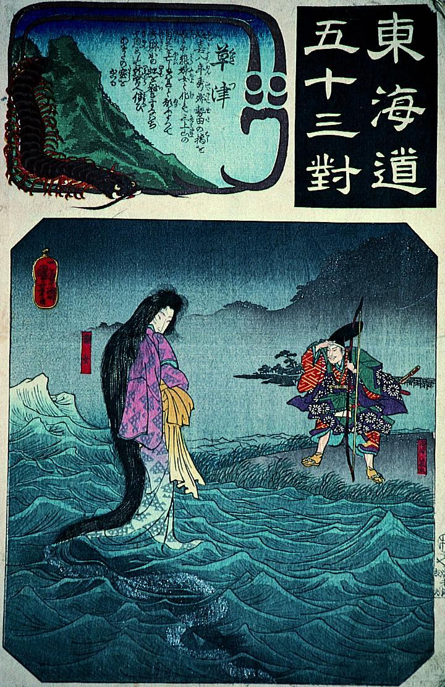

田原藤太の前に現れた女。水面に立っている。髪が長く、水中まで落ちて黒い影になっている。この女は龍女とあるごとく、琵琶湖の湖底に住む龍神の化身である。
著作者：歌川国芳／出典：親書誌：A5_pushkin_0013：東海道五十三対 草津；トウカイドウゴジュウサンツイクサツ／日付：2011／資源識別子：A5_pushkin_0013_0001_0000
Copyright (c)2010- International Research Center for Japanese Studies, Kyoto, Japan. All rights reserved.